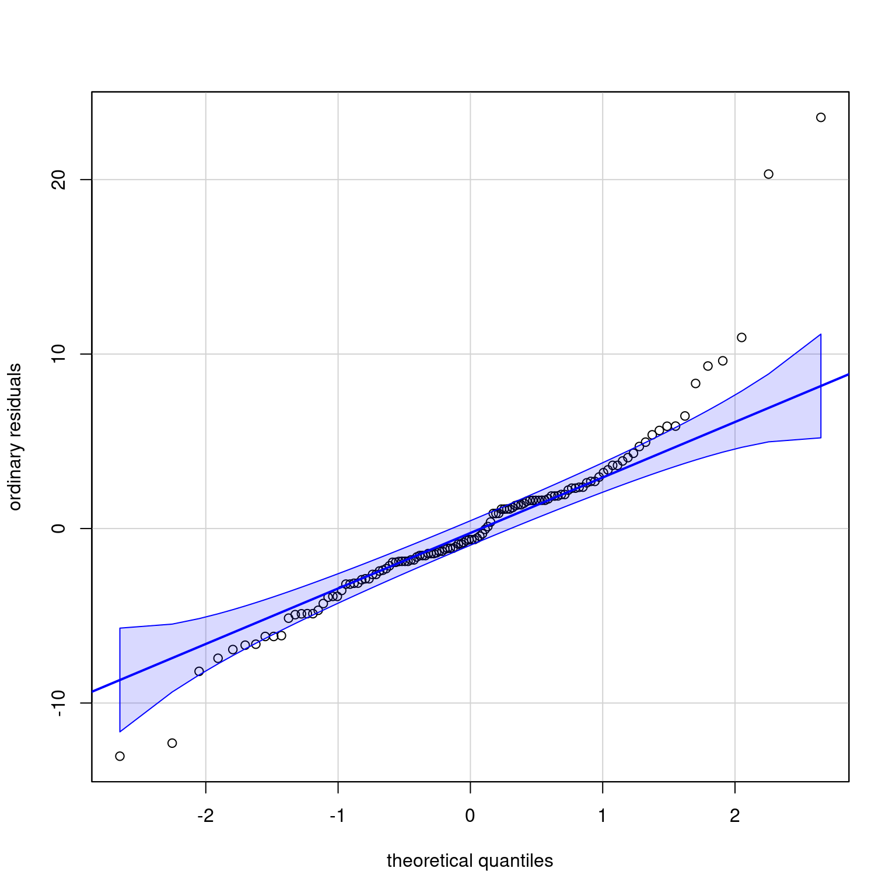

We consider a within-subject design from Brodeur et al. (2021), who conducted an experiment to check distraction while driving from different devices including smartwatches using a virtual reality environment. The response is the number of road safety violations during the task.
A quick inspection reveals that the data are balanced with four tasks and 31 individuals. We can view the within-subject design with a single replication as a complete block design (with id as block) and task as experimental manipulation.
How could we compare the different tasks? The data here are clearly very far from normally distributed and there are notable outliers among the residuals, as evidenced by Figure 1. Conclusions probably wouldn’t be affected by using an analysis of variance, but it may be easier to convince reviewers that the findings are solid by ressorting to nonparametric procedures.

Figure 1: Normal quantile-quantile plot of the block design. There are many outliers
Both the Friedman and the Quade tests are obtained by computing ranks within each block (participant) and then performing a two-way analysis of variance. The Friedman test is less powerful than Quade’s with a small number of groups. Both are applicable for block designs with a single factor. We can also obtain effect sizes for the rank test, termed Kendall’s \(W\). A value of 1 indicates complete agreement in the ranking: here, this would occur if the ranking of the number of violations was the same for each participant.
The Friedman test is obtained by replacing observations by the rank within each block (so rather than the number of violations per task, we compute the rank among the four tasks). The Friedman’s test statistic is \(18.97\) and is compared to a benchmark \(\chi^2_3\) distribution, yielding a \(p\)-value of \(3\times 10^{-4}\). The estimated agreement (effect size) is \(0.2\).
The test reveals significant differences in the number of road safety violations across tasks. We could therefore perform all pairwise differences using the signed-rank test and adjust \(p\)-values to correct for the fact we have performed six hypothesis tests.
To do this, we modify the data and map them to wide-format (each line corresponds to an individual). We can then feed the data to compute differences, here for phone vs watch. We could proceed likewise for the five other pairwise comparisons and then adjust \(p\)-values.
Asymptotic Wilcoxon-Pratt Signed-Rank Test
data: y by x (pos, neg)
stratified by block
Z = 0.35399, p-value = 0.7233
alternative hypothesis: true mu is not equal to 0
You can think of the test as performing a paired \(t\)-test for the 31 signed ranks \(R_i =\mathsf{sign}(D_i) \mathsf{rank}(|D_i|)\) and testing whether the mean is zero. The \(p\)-value obtained by doing this after discarding zeros is \(0.73\), which is pretty much the same as the more complicated approximation.
Study 2: Online vs in-person meetings
Brucks & Levav (2022) measure the attention of participants based on condition using an eyetracker.
We compare here the time spend looking at the partner by experimental condition (face-to-face or videoconferencing). The authors used a Kruskal–Wallis test, but this is equivalent to Wilcoxon’s rank-sum test.
Asymptotic Wilcoxon-Mann-Whitney Test
data: partner_time by cond (f2f, video)
Z = -6.4637, p-value = 1.022e-10
alternative hypothesis: true mu is not equal to 0
95 percent confidence interval:
-50.694 -25.908
sample estimates:
difference in location
-37.808
The output of the test includes, in addition to the \(p\)-value for the null hypothesis that both median time are the same, a confidence interval for the time difference (in seconds). This is obtained by computing all average of pairwise differences between observations of the two groups, so-called Walsh’s averages. The Hodges–Lehmann estimate of location (the median of Walsh’s differences) is \(-37.81\) seconds, with a 95% confidence interval for the difference of \([-50.69, -25.91]\) seconds.
These can be compared with the usual Welch’s two-sample \(t\)-test with unequal variance. The estimated mean difference is \(-39.69\) seconds for face-to-face vs group video, with a 95% confidence interval of \([-52.93, -26.45]\).
In either case, it’s clear that the videoconferencing translates into longer time spent gazing at the partner than in-person meetings.
References
Brodeur, M., Ruer, P., Léger, P.-M., & Sénécal, S. (2021). Smartwatches are more distracting than mobile phones while driving: Results from an experimental study. Accident Analysis & Prevention, 149, 105846. https://doi.org/10.1016/j.aap.2020.105846
---title: "Nonparametric tests"type: docseditor_options: chunk_output_type: console---## Study 1: Distraction from smartwatchesWe consider a within-subject design from @Brodeur:2021, who conducted an experiment to check distraction while driving from different devices including smartwatches using a virtual reality environment. The response is the number of road safety violations during the task.```{r}library(coin, quietly =TRUE)data(BRLS21_T3, package ="hecedsm")str(BRLS21_T3)xtabs(~ task + id, data = BRLS21_T3)```A quick inspection reveals that the data are balanced with four tasks and 31 individuals. We can view the within-subject design with a single replication as a complete block design (with `id` as block) and `task` as experimental manipulation.How could we compare the different tasks? The data here are clearly very far from normally distributed and there are notable outliers among the residuals, as evidenced by @fig-normqqplot. Conclusions probably wouldn't be affected by using an analysis of variance, but it may be easier to convince reviewers that the findings are solid by ressorting to nonparametric procedures.```{r}#| eval: true#| echo: false#| fig-align: 'center'#| fig-width: 8#| fig-height: 8#| out-width: '80%'#| label: fig-normqqplot#| fig-cap: "Normal quantile-quantile plot of the block design. There are many outliers"car::qqPlot(resid(aov(nviolation ~ id + task, data = BRLS21_T3)),id =FALSE, xlab ="theoretical quantiles",ylab ="ordinary residuals")```Both the Friedman and the Quade tests are obtained by computing ranks within each block (participant) and then performing a two-way analysis of variance. The Friedman test is less powerful than Quade's with a small number of groups. Both are applicable for block designs with a single factor. We can also obtain effect sizes for the rank test, termed Kendall's $W$. A value of 1 indicates complete agreement in the ranking: here, this would occur if the ranking of the number of violations was the same for each participant.```{r}#| message: false#| warning: falsefriedman <- coin::friedman_test( nviolation ~ task | id,data = BRLS21_T3)quade <- coin::quade_test( nviolation ~ task | id,data = BRLS21_T3)eff_size <- effectsize::kendalls_w(x ="nviolation", groups ="task", blocks ="id", data = BRLS21_T3)```The Friedman test is obtained by replacing observations by the rank within each block (so rather than the number of violations per task, we compute the rank among the four tasks). The Friedman's test statistic is $`r round( friedman@statistic@teststatistic, 3)`$ and is compared to a benchmark $\chi^2_3$ distribution, yielding a $p$-value of $`r round(friedman@distribution@pvalue(q = friedman@statistic@teststatistic), 4)`$. The estimated agreement (effect size) is $`r round(eff_size$Kendalls_W, 2)`$.The test reveals significant differences in the number of road safety violations across tasks. We could therefore perform all pairwise differences using the signed-rank test and adjust $p$-values to correct for the fact we have performed six hypothesis tests.To do this, we modify the data and map them to wide-format (each line corresponds to an individual). We can then feed the data to compute differences, here for `phone` vs `watch`. We could proceed likewise for the five other pairwise comparisons and then adjust $p$-values.```{r}smartwatch <- tidyr::pivot_wider(data = BRLS21_T3,names_from = task,values_from = nviolation)coin::wilcoxsign_test(phone ~ watch,data = smartwatch)``````{r}#| eval: true#| echo: falsesigned_rank <-function( x,method =c("Pratt","Wilcoxon")){ method <-match.arg(method)if(method =="Pratt"){ sx <-sign(x)*rank(abs(x))return(sx[sign(x)!=0]) } elseif(method =="Wilcoxon"){ x <- x[x!=0]return(sign(x)*rank(abs(x))) }}# Rank differencessrank <-with(smartwatch,signed_rank(phone - watch))ttest <-t.test(srank)```You can think of the test as performing a paired $t$-test for the 31 signed ranks $R_i =\mathsf{sign}(D_i) \mathsf{rank}(|D_i|)$ and testing whether the mean is zero. The $p$-value obtained by doing this after discarding zeros is $`r round(ttest$p.value, 3)`$, which is pretty much the same as the more complicated approximation.## Study 2: Online vs in-person meetings@Brucks.Levav:2022 measure the attention of participants based on condition using an eyetracker.We compare here the time spend looking at the partner by experimental condition (face-to-face or videoconferencing). The authors used a Kruskal--Wallis test, but this is equivalent to Wilcoxon's rank-sum test.```{r}data(BL22_E, package ="hecedsm")mww <- coin::wilcox_test( partner_time ~ cond, data = BL22_E, conf.int =TRUE)welch <-t.test(partner_time ~ cond, data = BL22_E, conf.int =TRUE)mww```The output of the test includes, in addition to the $p$-value for the null hypothesis that both median time are the same, a confidence interval for the time difference (in seconds). This is obtained by computing all average of pairwise differences between observations of the two groups, so-called Walsh's averages. The Hodges--Lehmann estimate of location (the median of Walsh's differences) is $`r round(as.numeric(mww@confint(level = 0.95)$estimate), 2)`$ seconds, with a 95% confidence interval for the difference of $[`r round(mww@confint(level = 0.95)$conf.int[1], 2)`, `r round(mww@confint(level = 0.95)$conf.int[2], 2)`]$ seconds.These can be compared with the usual Welch's two-sample $t$-test with unequal variance. The estimated mean difference is $`r round(as.numeric(welch$estimate[1]-welch$estimate[2]), 2)`$ seconds for face-to-face vs group video, with a 95% confidence interval of $[`r round(as.numeric(welch$conf.int[1]), 2)`, `r round(as.numeric(welch$conf.int[2]), 2)`]$.In either case, it's clear that the videoconferencing translates into longer time spent gazing at the partner than in-person meetings.